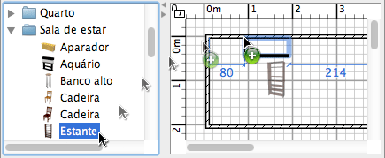

|
|
Adicionando mob�lia | ||
|
Para adicionar mob�lias em sua casa, arraste e solte uma ou mais pe�as de mob�lia do cat�logo para o plano da casa ou da lista de mob�lia.
 Voc� tamb�m pode selecionar v�rias pe�as no cat�logo, ent�o escolha Mob�lia > Adicionar na casa ou clique na ferramenta Adicionar na casa.
Quando as pe�as s�o soltas na lista de mob�lias ou adicionadas com o menu
Mob�lias > Adicionar � casa, a posi��o de seu canto superior esquerdo � (0,
0). As pe�as adicionadas na casa s�o selecionadas e desenhadas simultaneamente na lista de mob�lias, no plano e na vis�o 3D. Durante o carregamento do modelo 3D, as pe�as s�o representadas como caixas brancas na vis�o 3D. |
|